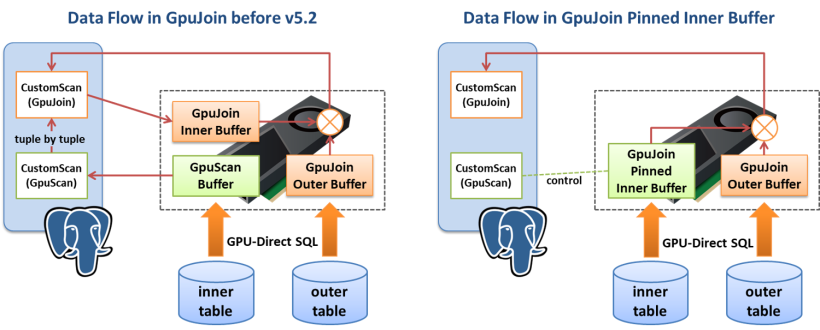

PG-Strom v5.2 Release
Overview
Major changes in PG-Strom v5.2 are as follows:
- GpuJoin Pinned Inner Buffer
- Improved GPU-Direct SQL performance
- 64bit GPU Buffer representation
- Per-tuple CPU-Fallback
- SELECT DISTINCT support
- Improced parallel pg2arrow
- Cumulative bug fixes
Prerequisites
- PostgreSQL v15.x, v16.x
- CUDA Toolkit 12.2 or later
- Linux distributions supported by CUDA Toolkit
- Intel x86 64bit architecture (x86_64)
- NVIDIA GPU CC 6.0 or later (Pascal at least; Turing or newer is recommended)
GpuJoin Pinned Inner Buffer
PG-Strom's GpuJoin is designed to perform tables JOIN based on the Hash-Join algorithm using GPU in parallel. Due to the nature of the Hash-Join algorithm, the table on the INNER side must be read onto the buffer before the JOIN processing. In the older version, the contents of the INNER tables were read line by line using PostgreSQL's internal APIs.
This design was wasteful when the INNER side was a GpuScan that reads a huge table.
For example, consider the following query. This query includes a JOIN of lineitem(882GB) and about 1/4 of orders(205GB). There is a GpuScan in the lower node of GpuPreAgg that includes JOIN, which reads the orders table into the INNER buffer, but this requires about 360 million GpuScan calls and uses 30GB of INNER buffer which should be moved to the GPU.
=# explain select l_shipmode, o_shippriority, sum(l_extendedprice)
from lineitem, orders
where l_orderkey = o_orderkey
and o_orderdate >= '1997-01-01'
group by l_shipmode, o_shippriority;
QUERY PLAN
--------------------------------------------------------------------------------------------------------------------------------
HashAggregate (cost=38665701.61..38665701.69 rows=7 width=47)
Group Key: lineitem.l_shipmode, orders.o_shippriority
-> Custom Scan (GpuPreAgg) on lineitem (cost=38665701.48..38665701.55 rows=7 width=47)
GPU Projection: pgstrom.psum((lineitem.l_extendedprice)::double precision), lineitem.l_shipmode, orders.o_shippriority
GPU Join Quals [1]: (lineitem.l_orderkey = orders.o_orderkey) ... [nrows: 6000244000 -> 1454290000]
GPU Outer Hash [1]: lineitem.l_orderkey
GPU Inner Hash [1]: orders.o_orderkey
GPU-Direct SQL: enabled (GPU-0)
-> Custom Scan (GpuScan) on orders (cost=100.00..10580836.56 rows=363551222 width=12)
GPU Projection: o_shippriority, o_orderkey
GPU Pinned Buffer: enabled
GPU Scan Quals: (o_orderdate >= '1997-01-01'::date) [rows: 1499973000 -> 363551200]
GPU-Direct SQL: enabled (GPU-0)
(13 rows)
In the v5.2, GpuJoin's INNER buffer initial setup process has been redesigned to be more effectively.

GpuScan checks the WHERE clause on the rows read from the table and writes back to the host side (PostgreSQL backend process). GpuJoin reads the results to setup the INNER buffer, and copies this to the GPU side, but originally all the necessary data was on the GPU when GpuScan processed the INNER side table, and it is not very reasonable to get GpuScan's results back to the host side then copy to the GPU side again.
GpuJoin Pinned Inner Buffer allows GpuScan to keep the processing results, when child node of GpuJoin is GpuScan, to use a part of INNER buffer on the next GpuJoin, instead of returning the GpuScan's results to the host side once. Thie mechanism allows to save a lot of initial setup time of GpuJoin when size of the INNER tables are very large.
On the other hand, setting up of the INNER buffer on GPU side means that the GpuJoin INNER buffer does not physically exist on the CPU memory, therefore, SQL must be aborted by error if CPU fallback processing is required.
Due to the potential side effects, the GpuJoin Pinned Inner Buffer function is disabled by default. You must explicitly enable the feature using command below; that means GpuJoin uses Pinned Inner Buffer if the estimated INNER buffer size exceeds 100MB.
=# set pg_strom.pinned_inner_buffer_threshold = '100MB';
SET
Per-tuple CPU-Fallback
When processing SQL workloads on GPUs, input data may have patterns that cannot be executed on GPUs in principle. For example, if long variable-length data does not fit into the PostgreSQL block size and is fragmented into an external table (this is called the TOAST mechanism), GPUs that do not have data in the external table will not continue processing.
PG-Strom has a mechanism called CPU-Fallback, which allows processing of such data on the CPU side. Typically, processing logic such as GpuJoin and GpuPreAgg reads 64MB of data (called chunks) from a table and launches a GPU kernel to process the SQL workload.
In the older version, if a CPU-Fallback error occurred while processing a SQL workload, the GPU kernel performing on the entire chunk was canceled and written back to the CPU side. However, this strategy was problematic in two points. First, if there is just one piece of bad data in a chunk containing hundreds of thousands of rows of data, the GPU processing of the entire chunk will be canceled. Another problem is that GpuPreAgg that keep updating the aggregation buffer, a situation may occur where it is difficult to know how much has been reflected in the aggregation table. (Therefore, before v5.1, GpuPreAgg's CPU-Fallback was treated as an error)

PG-Strom v5.2 improves the CPU-Fallback implementation to resolve these issues.
When a CPU-Fallback error occurs, instead of canceling the processing of the entire chunk as in the past, we prepare a "Fallback Buffer" in addition to the "Destination Buffer" that writes the normal processing result to handle the CPU-Fallback error. Only the generated tuples are written. The contents of "Fallback Buffer" are later written back to the CPU side and evaluated again by the CPU. Therefore, not only do you need to perform CPU-Fallback processing on only the minimum number of tuples required, but you also do not have to worry about the GpuPreAgg aggregation buffer being updated redundantly.
64bit GPU Buffer representation
GPUs with memory such as 48GB or 80GB are now on sale, but the data format of the GPU buffer used internally by PG-Strom was designed around 2017 during the development of v2.0. In other words, even high-end GPUs were typically 16GB or 24GB, and others were generally 8GB or less. Under such a premise, a data format that can reduce memory usage was prioritized rather than being able to express physically impossible large amounts of data without too much or too little.
Tuples loaded into PG-Strom's GPU buffer are always guaranteed to be 8-byte aligned. Therefore, by shifting the 32-bit offset value by 3 bits, it was actually possible to express an address width of 35 bits (= 32 GB). In 2020, the NVIDIA A100 with 40GB of memory was announced, but the 32GB buffer length limit was essentially a meaningless restriction.
This is because PG-Strom reads data from storage in 64MB chunks, so it was almost impossible for the GPU buffer size to exceed 32GB.
However, in the following situations it becomes necessary to assume a very large result buffer.
- When the GPU cache holds a very large amount of data.
- A case where the GpuJoin INNER buffer swelled to a huge size.
- When the number of rows resulting from GROUP BY or SELECT DISTINCT increases significantly.
In PG-Strom v5.2, all offset values on GPU buffers have been replaced with 64-bit representation. As a result, it is now possible to handle GPU buffers larger than 32GB, and even with workloads such as those mentioned above, it is now possible to handle up to the physical RAM size range.
Other new features
Improved GPU-Direct SQL performance
NVIDIA's cuFile library assumed Devive Primary Context internally. As a result, there was a cost to switch the CUDA Context for API calls from the PG-Strom GPU Service, which was using a uniquely generated CUDA Context.
In PG-Strom v5.2, GPU Service has also been redesigned to use Device Primary Context, which has improved performance by approximately 10% by eliminating switching costs in the cuFile library and the associated CPU Busy Loop. is being carried out.
SELECT DISTINCT support
PG-Strom v5.2 supports the SELECT DISTINCT... clause. In previous versions, this had to be rewritten as a GROUP BY clause.
Improced parallel pg2arrow
If you use the -t option and -n option together with the pg2arrow command, check the table size to be read, adjust the scan range so that each worker thread does not read the table redundantly, and execute the query. Issue.
Aliases for duplicated names on IMPORT FOREIGN SCHEMA
When importing an Arrow file using the IMPORT FOREIGN SCHEMA or pgstrom.arrow_fdw_import_file() function, if a Field has a duplicate name, give an alias to the second and subsequent columns with duplicate names. Now it looks like this.
Partial concurrent results responding
When the Destination Buffer is used up in various processes such as GpuJoin or GpuPreAgg, execution of the GPU kernel will be paused, partial processing results will be returned to the backend process, and then execution of the GPU kernel will be resumed again. became. Until now, the structure was such that the Destination Buffer was expanded to hold all the processing results of the chunk, so if the result set was huge for the input, it would consume excessive CPU and GPU memory. There was a problem with the system becoming unstable.
Cumulative bug fixes
- [#664] Too much CPU consumption ratio with cuFile/GDS on many threads
- [#757] wrong varnullingrels at setrefs.c
- [#762] arrow_fdw: scan-hint needs to resolve expressions using INDEV_VAR
- [#763] Var-nodes on kvdef->expr was not compared correctly
- [#764][#757] Var::varnullingrels come from the prior level join are not consistent
- [#673] lookup_input_varnode_defitem() should not use equal() to compare Var-nodes
- [#729] update RPM build chain
- [#765] Add regression test for PostgreSQL 16
- [#771] Update regression test for PostgreSQL 15
- [#768] fix dead loop in `gpuCacheAutoPreloadConnectDatabase
- [#xxx] Wrong GiST-Index based JOIN results
- [#774] add support of SELECT DISTINCT
- [#778] Disable overuse of kds_dst buffer in projection/gpupreagg
- [#752] add KDS_FORMAT_HASH support in execGpuJoinProjection()
- [#784] CPU-Fallback JOIN didn't handle LEFT/FULL OUTER case if tuple has no matched inner row
- [#777] Fix the bug of dynamically allocating fallback buffer size and nrooms
- [#776] Fix the out of range bug in pgfn_interval_um()
- [#706] gpucache: drop active cache at DROP DATABASE from shmem / gpumem
- [#791] gpujoin: wrong logic to detect unmatched inner tuple
- [#794] assertion failure at cost_memoize_rescan()
- [#xxx] pg2arrow: outer/inner-join subcommand initialization
- [#xxx] IMPORT FOREIGN SCHEMA renames duplicated field name
- [#xxx] arrow_fdw: correct pg_type hint parsing
- [#748] Add support CPU-fallback on GpuPreAgg, and revise fallback implementation
- [#778] Add XpuCommandTag__SuccessHalfWay response tag